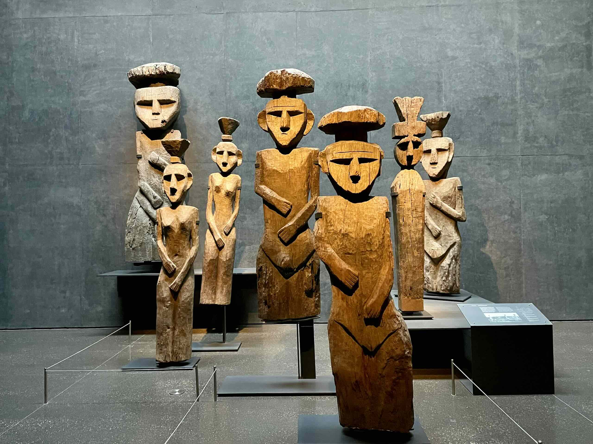
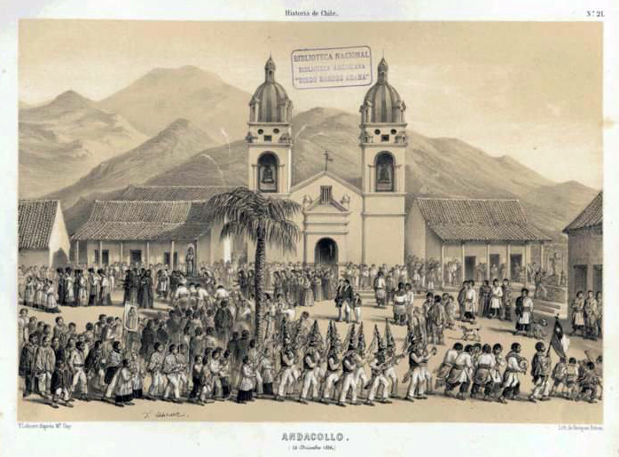
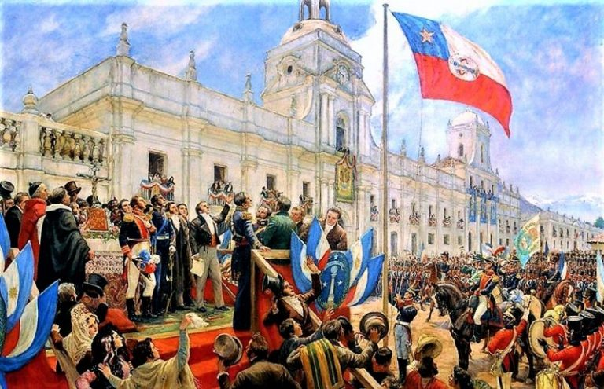

Antes de la llegada de los europeos, Chile estaba habitado por diversas culturas indígenas. Los mapuches en el sur, los aimaras en el norte y los incas que extendieron su imperio hasta el centro del país. Estas sociedades desarrollaron agricultura, cerámica y sistemas sociales complejos.
En 1541, Pedro de Valdivia fundó Santiago, iniciando la colonización española. Chile formó parte del Virreinato del Perú y luego del Río de la Plata. La economía se basó en la minería y la agricultura, con conflictos constantes con los mapuches en la Guerra de Arauco.
La independencia de Chile se inició en 1810 y se consolidó en 1818 con la victoria en la Batalla de Maipú, liderada por Bernardo O'Higgins y José de San Martín. En el siglo XX, Chile experimentó reformas sociales, dictaduras y transiciones democráticas, destacando el gobierno de Salvador Allende y el régimen de Augusto Pinochet.
